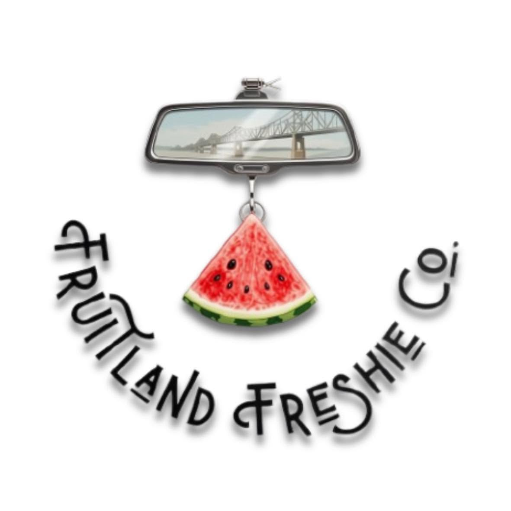
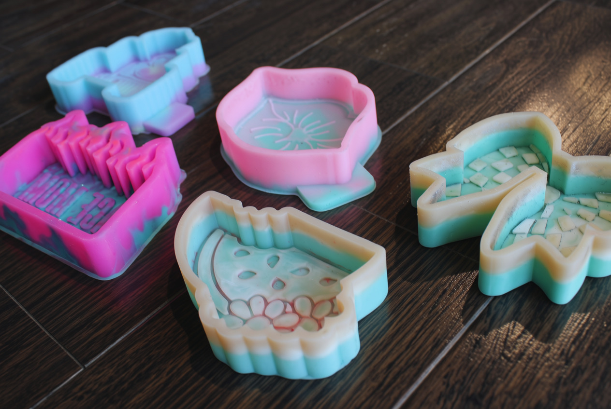
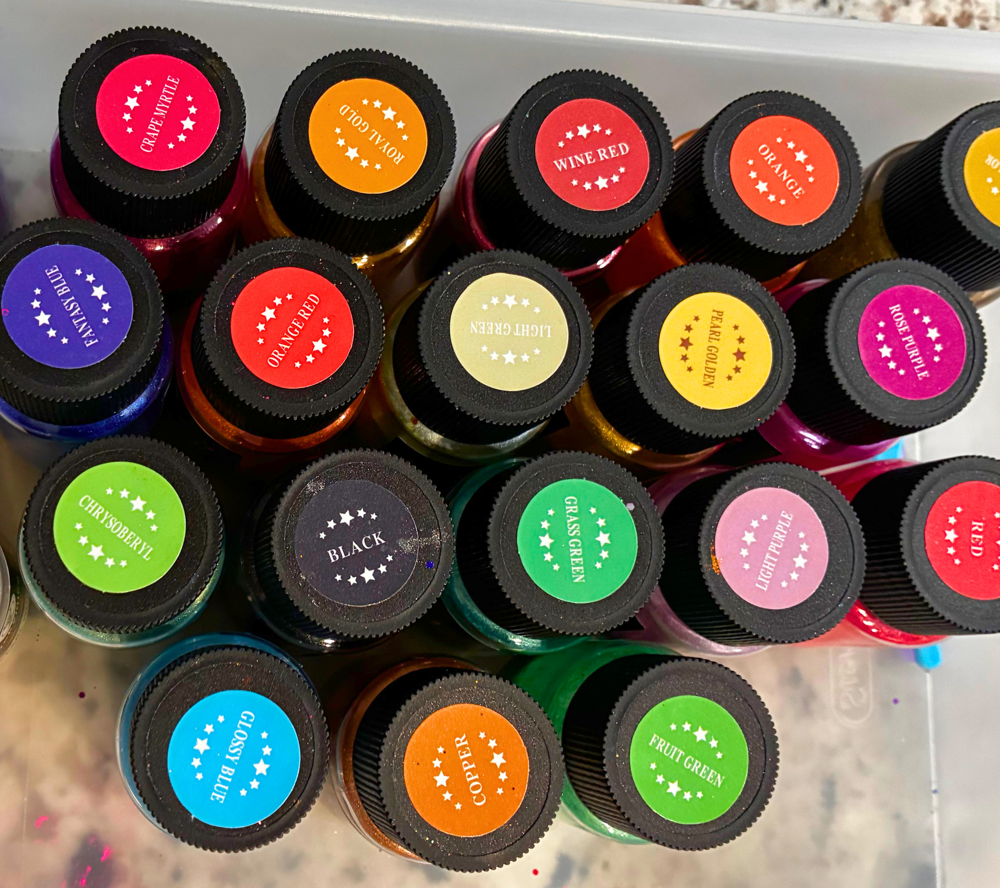
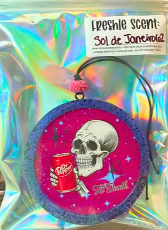
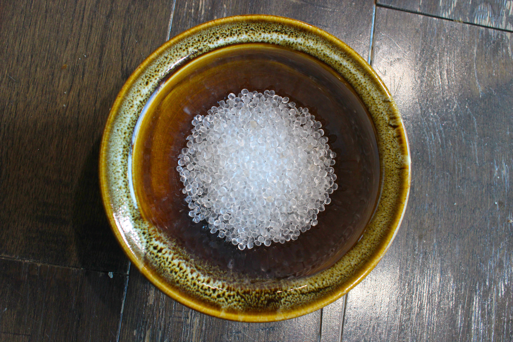
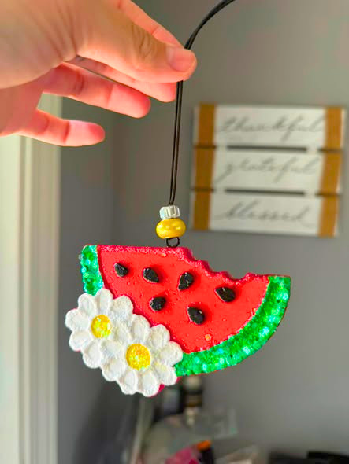
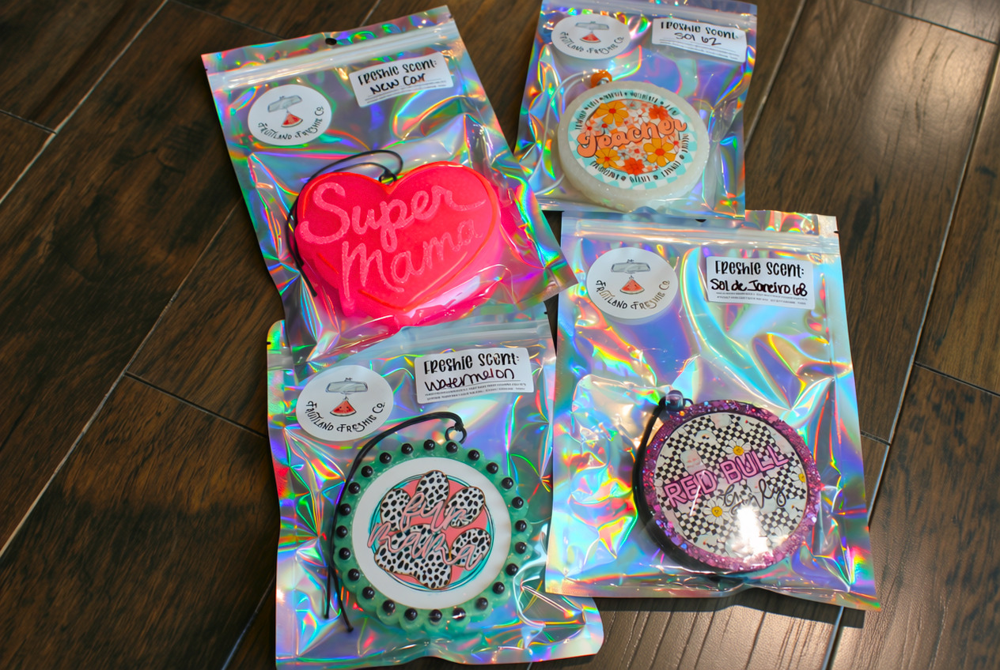

THE STORY BEHIND THE FRESHIES
A Little About Me!
Every freshie has a little personality, and so does the person who makes them! Come get to know the heart behind Fruitland Freshie Co.

MEET THE MAKER
Hi, I'm Emma!
Welcome to Fruitland Freshie Co.! I'm Emma, the creator and maker behind all the freshies you see here.
I'm Fruitland local with a creative heart and a love for all things colorful. After spending some time living in Montana, I've found my way back to the area and brought a little creativity along with me!
Between being a full-time mom, working full-time in childcare, and running my small business, life is certainly busy! But creating beautiful, personalized freshies is something I genuinely love.
Fruitland Freshie Co. was created with one simple idea in mind: everyone deserves something that feels like them. I wanted to create freshies that let people express their personalities, styles, and individual vibes through something fun and functional.
YOUR STYLE. YOUR SCENTS. YOUR FRESHIE.
Made With Creativity & Love
No two people are exactly alike, so why should their freshies be? At Fruitland Freshie Co., customization is what makes the fun so special!



Whether your style is bright and bold, soft and simple, sweet and fruity, or somewhere in between, there's something for everyone!
A PEEK BEHIND THE MAGIC
What's Inside a Freshie?
Ever wondered how these little creations come to life? Here's a peek at some of the materials and details that make each freshie special!

Fragrance-Filled Beads
Each freshie starts with silica beads that are cured with fragrance oils to create a beautifully scented finished product.

A Pop of Color
Mica powder brings each creation to life with beautiful colors, adding personality and a little extra fun to every freshie.

Personalized Details
Want a little something extra? Freshies can be decorated with fun additions like photos, gems, and glitter!
Every little detail comes together to create something colorful, creative, and uniquely YOU!
MADE JUST FOR YOU
Find Your Freshie!
Whether you're shopping for yourself, looking for a thoughtful gift, or dreaming up something completely custom, I'm here to help you find the perfect match.
Thank you for supporting my small business and allowing me to be a little part of your everyday!
Let's make something that's uniquely YOU!
Explore Our Freshies